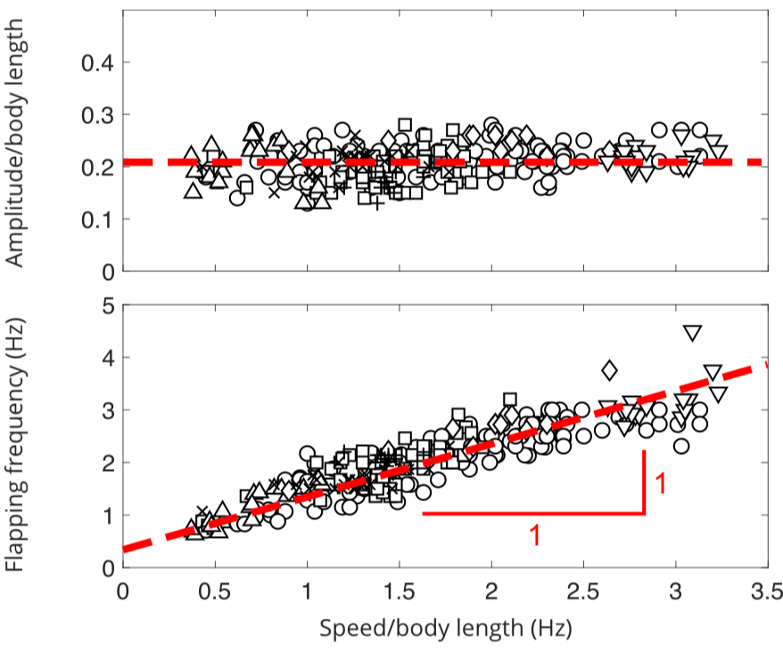

D. Floryan, T. Van Buren, C. W. Rowley, and A. J. Smits, Journal of Fluid Mechanics (2017), 822, 386–397
doi: 10.1017/jfm.2017.302
arXiv: 1704.07478
We develop scaling laws to model the propulsive performance of heaving and pitching foils, validating them against experiments. Some very interesting implications for biology arise. The image shows that odontocete cetaceans change frequency one-to-one with speed, but maintain a constant amplitude. According to our theory, these animals maintain a constant efficiency while changing speed.
Scaling laws for the propulsive performance of rigid foils undergoing oscillatory heaving and pitching motions are presented. Water tunnel experiments on a nominally two-dimensional flow validate the scaling laws, with the scaled data for thrust, power and efficiency all showing excellent collapse. The analysis indicates that the behaviour of the foils depends on both Strouhal number and reduced frequency, but for motions where the viscous drag is small the thrust closely follows a linear dependence on reduced frequency. The scaling laws are also shown to be consistent with biological data on swimming aquatic animals.